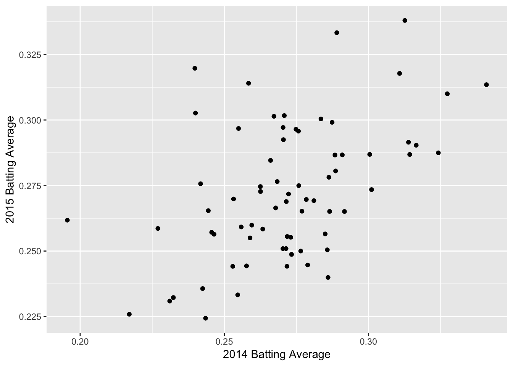
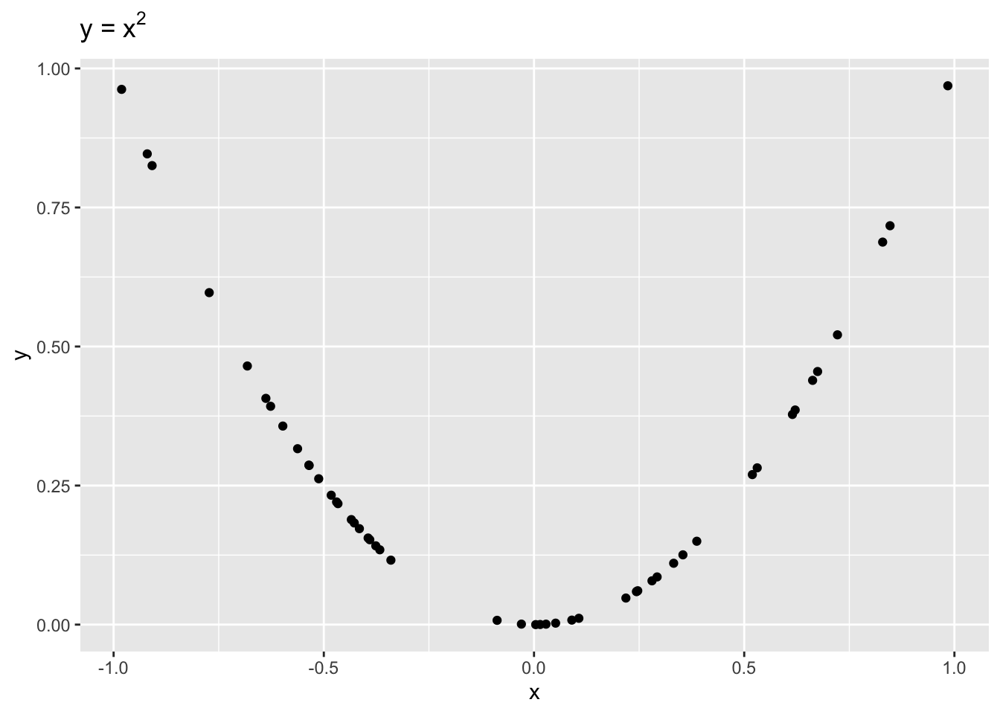
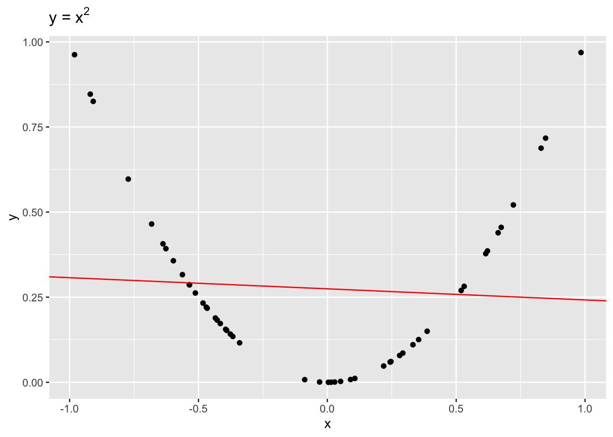
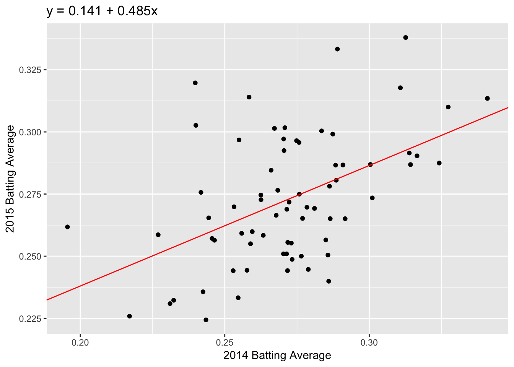
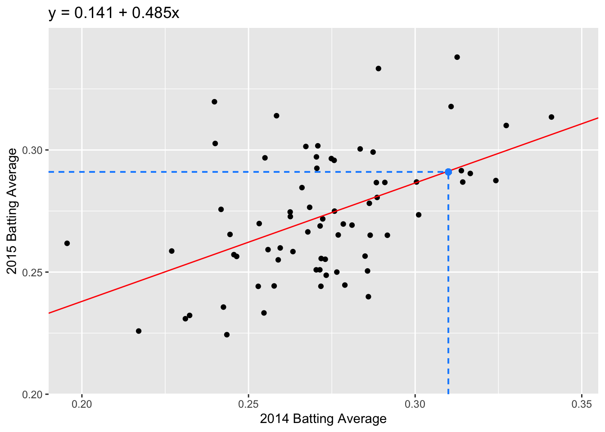
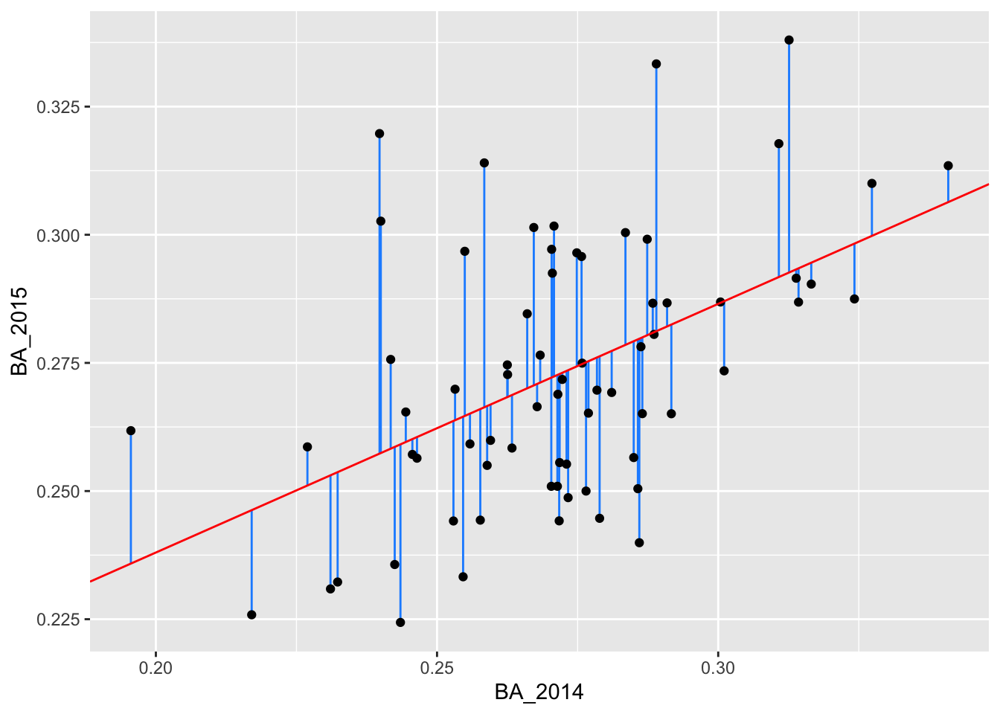
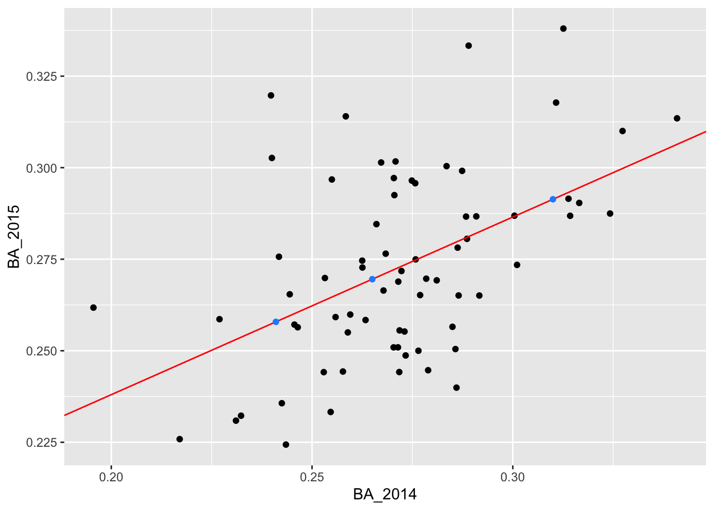
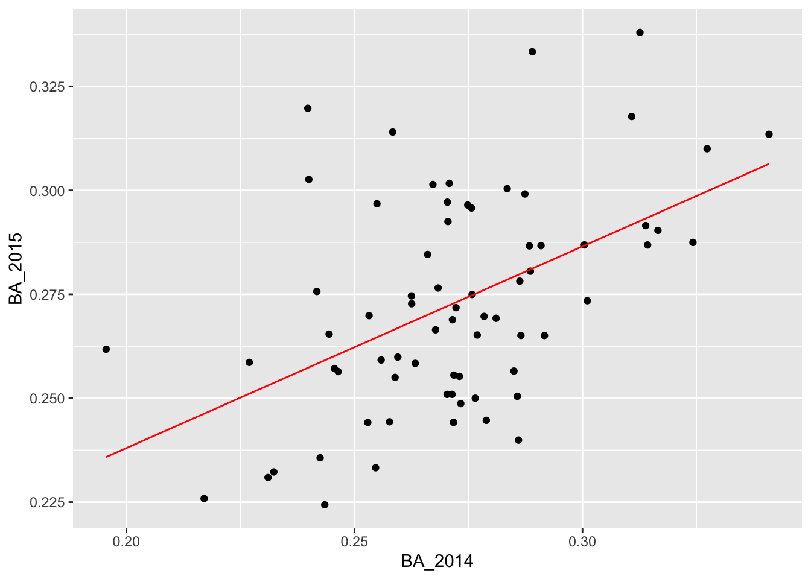

In Lecture 4, we looked at predicting an MLB player’s 2015 batting average using their 2014 batting average. We did so by binning the data and looking at the average within each bin. What if we wanted to make the bins infinitesimally small? This brings us to the ideas of correlation and the regression method.
We again read in the data and plot the 2014 batting averages against the 2015 batting averages:
> library(tidyverse)
> batting_2014_2015 <- read_csv("data/batting_2014_2015.csv")> g <- ggplot(data = batting_2014_2015)
> g <- g + geom_point(aes(x = BA_2014, y = BA_2015))
> g <- g + labs(x = "2014 Batting Average", y = "2015 Batting Average")
> g
We can see a positive trend between the 2014 and 2015 batting averages. How can we quantify the relationship between the 2014 and 2015 data?
The correlation coefficient, r, is one way to summarize the dependence between two seasons with one number. r is a standardized measure of the linear dependence between two variables (usually called \(x\) and \(y\)) and can take values between -1 and +1.
If \(r = 1\), then the points all lie on a line with positive slope. If \(r = -1\), the points all lie on a line with negative slope.
Loosely speaking, we can think of correlation as a measure of how well a line fits our data. Let’s get some practice!
We can calculate the correlation between two variables in R using the function cor(). The correlation between the 2014 and 2015 batting averages is:
> cor(batting_2014_2015[["BA_2014"]], batting_2014_2015[["BA_2015"]])
[1] 0.4928799We have a moderate amount of correlation between 2014 and 2015 batting averages, but there is still a lot of noise.
It is important to remember that correlation is only a measure of linear dependence between two variables. The below example shows data where \(y = x^2\) exactly.

Even though \(x\) and \(y\) are dependent, \(r = -0.1\), indicating a weak linear dependence. If we were to draw a line to fit this data, it would be quite flat!

Now let’s go back to the 2014 and 2015 batting data. To visualize our correlation, we draw the line of best fit through our data. In this example, the line of best fit has \(y\)-intercept = 0.141 and slope = 0.485 (we’ll talk about how we find this values later).
> g <- g + geom_abline(intercept = 0.141, slope = 0.485, color = "red")
> g <- g + labs(title = "y = 0.141 + 0.485x")
> g
Question: Which feature of the best fit line, \(a\) or \(b\), quantifies the linear dependence between 2014 and 2015 FG%?
How does correlation relate to our line of best fit? This brings us to the regression method.
If we standardize both datasets, \(x\) and \(y\), the correlation is the slope of the line of best fit:
\[\frac{y - \bar{y}}{sd(y)} = r \times \frac{x - \bar{x}}{sd(x)}\]
We can unpack this equation to get the formula for our unstandardized line of best fit:
\[y = a + bx\] where \(a = \bar{y} - b\bar{x}\) and \(b = r \times sd(y)/sd(x)\).
Now that we have our regression line, we can predict a future \(y\) value given we know \(x\). For example, if we know that a player’s 2014 batting average was 0.31, we predict that their 2015 batting average will be: \[\widehat{y} = 0.141 + 0.485 \times 0.31 = 0.291.\] Note that we use \(\widehat{y}\) for a predicted value of \(y\); we can think of this as \(\widehat{y} = E[Y|x]\).

Question: What is the interpretation of the slope coefficient, \(b\)?
To find the regression coefficients, \(a\) and \(b\), we use the function lm(). The usage of lm() is as follows:
> fit <- lm(BA_2015 ~ BA_2014, data = batting_2014_2015)The first argument in the lm() call is called a formula. This takes input y ~ x, where y is our response and x is our predictor or covariate. In the lm() call above, the column BA_2015 is our response and BA_2014 is our predictor.
The second argument in lm() is where we specifiy our data: batting_2014_2015. R then looks for the columns BA_2014 and BA_2015 in the given dataset to calculate the regression coefficients.
Our new object, fit, contains a lot of information about our regression line. At the moment, we just want the coefficients. We can access the coefficients as follows:
> fit[["coefficients"]]
(Intercept) BA_2014
0.1409779 0.4851417 modelr packagemodelr is another package that is part of the tidyverse. It has a number of useful functions for linear regression models.
> library(modelr)We can use the function rsquare to get the square of the correlation, \(r^2\). The quantity \(r^2\) is the proportion of variance explained by the linear model. The first argument of the rsquare function is the output fit from our linear model function lm. The second argument is our original dataset, batting_2014_2015:
> rsquare(fit, batting_2014_2015)
[1] 0.2429305We can also use modelr to add predictions and residuals to our original dataset:
> batting_2014_2015 <- batting_2014_2015 %>%
+ add_predictions(fit) %>%
+ add_residuals(fit)
> batting_2014_2015
# A tibble: 70 x 5
playerID BA_2014 BA_2015 pred resid
<chr> <dbl> <dbl> <dbl> <dbl>
1 abreujo02 0.317 0.290 0.295 -0.00417
2 altuvjo01 0.341 0.313 0.306 0.00711
3 andruel01 0.263 0.258 0.269 -0.0103
4 aybarer01 0.278 0.270 0.276 -0.00638
5 bautijo02 0.286 0.250 0.280 -0.0291
6 beltrad01 0.324 0.287 0.298 -0.0108
7 blackch02 0.288 0.287 0.281 0.00577
8 bogaexa01 0.240 0.320 0.257 0.0624
9 brantmi02 0.327 0.310 0.300 0.0102
10 braunry02 0.266 0.285 0.270 0.0145
# … with 60 more rowsWe now have added columns pred and resid to our original tibble, batting_2014_2015.
Using these new columns, we can create the original plot and add the residual lengths:
> g <- ggplot(batting_2014_2015)
> g <- g + geom_segment(aes(x = BA_2014, xend = BA_2014, y = BA_2015, yend = pred), color = "dodgerblue")
> g <- g + geom_point(aes(x = BA_2014, y = BA_2015))
> g <- g + geom_abline(intercept = 0.1409779, slope = 0.4851417, color = "red")
> g
So far we have looked at the predicted values from our training data; that is, the data we used to fit our linear model. Suppose we have more players’ batting averages from 2014 but we do not have their batting averages from 2015. We can use our linear model to predict these players’ 2015 batting average using the function predict.
In the below code, we enter the players’ 2014 batting averages as the tibble new_data. We then use the function predict. The first argument of predict is the fitted model, fit. The second argument is new_data.
> new_data <- tibble(BA_2014 = c(0.241, 0.31, 0.265))
Warning: `new_list_along()` is deprecated as of rlang 0.3.0.
Please use `rep_along(x, list(NULL))` or `rep_named(nms, list(NULL))` instead.
This warning is displayed once per session.
> new_pred <- predict(fit, new_data)
> new_pred
1 2 3
0.2578971 0.2913719 0.2695405 We can also add these predictions to new_data using add_predictions:
> new_data <- new_data %>%
+ add_predictions(fit)
> new_data
# A tibble: 3 x 2
BA_2014 pred
<dbl> <dbl>
1 0.241 0.258
2 0.31 0.291
3 0.265 0.270We add these predictions to our plot:
> g <- ggplot(batting_2014_2015)
> g <- g + geom_point(aes(x = BA_2014, y = BA_2015))
> g <- g + geom_abline(intercept = 0.1409779, slope = 0.4851417, color = "red")
> g <- g + geom_point(data = new_data, mapping = aes(x = BA_2014, y = pred), color = "dodgerblue")
> g
data_gridIn the above code, we drew our fitted line using our coefficients from fit and geom_abline to specifiy the slope and the intercept. An alternative way to plot our fitted line is to use the function data_grid. This function creates a grid of evenly spaced points over the range of our x data.
> grid <- batting_2014_2015 %>%
+ data_grid(BA_2014)
> grid
# A tibble: 70 x 1
BA_2014
<dbl>
1 0.196
2 0.217
3 0.227
4 0.231
5 0.232
6 0.240
7 0.24
8 0.242
9 0.242
10 0.243
# … with 60 more rowsWe can then add our predicted values at these grid points using add_predictions and our linear model, fit.
> grid <- grid %>%
+ add_predictions(fit)Using this grid dataset, we can add a geom_line over our scatter plot of 2014 vs 2015 batting averages. This just “connects the dots” between the points in grid.
> ggplot(data = batting_2014_2015) +
+ geom_point(aes(x = BA_2014, y = BA_2015)) +
+ geom_line(data = grid, aes(x = BA_2014, y = pred), colour = "red")
At this point you might ask: why should I use data_grid instead of just geom_abline? The real benefit of using data_grid is when you want to visualize a more complicated model for which there is no geom. For instance, if you have a probit or logistic model!
For more details on modelling using the tidyverse, you can look at Chapter 23 of the book R for Data Science by Hadley Wickham and Garrett Grolemund. It’s also a great reference in general!